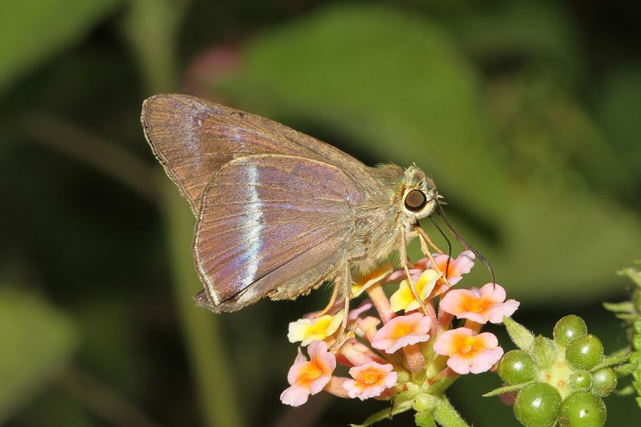

कॉमन बैंडेड आल तितलीCommon Banded Awl
Hasora chromus · Hesperiidae · INS-0308

- Scientific name वैज्ञानिक नाम
- Hasora chromus (Cramer, 1780)
- Family कुल
- Hesperiidae
- Hindi हिंदी
- कॉमन बैंडेड आल तितली
- Local names स्थानीय नाम
- common banded awl, common banded awl titli
- Status here यहाँ की स्थिति
- native
- Movement आवागमन
- Resident, here all year
- Known from कहाँ दर्ज
- Others have published records from the wider Awadh–Purvanchal plain, none yet from Basti–Ayodhya अवध–पूर्वांचल से दूसरों के प्रकाशित अभिलेख, बस्ती–अयोध्या से अभी नहीं
- IUCN IUCN
- not evaluated
- Review समीक्षा
- not yet reviewed
When to look कब देखें
Present all year. साल भर मौजूद।
कॉमन बैंडेड आल तितली / Common Banded Awl
Hasora chromus (Cramer, 1780) — Hesperiidae
कॉमन बैंडेड आल तितली — यह स्किपर (Hesperiidae) परिवार की एक तितली है जिसके पिछले पंख की निचली सतह पर हल्की स्टील-नीली चमक होती है। इसके निचले पिछले पंख पर एक संकरी नीली या बैंगनी-सफेद पट्टी होती है जो बाहर की ओर धुंधली होती जाती है। भारत सहित एशिया के बड़े हिस्से में इसका वितरण दर्ज है।
Quick Identification त्वरित पहचान
| Feature | Description |
|---|---|
| Wingspan | 45–50 mm (Evans 1932, as alexis alexis) |
| Underside hindwing band | Discal band bluish or purple white, narrow, outwardly diffused (Evans 1932) |
| Underside gloss | Wing more or less glossed dull steely blue (Evans 1932) |
Field tip: Look at the underside of the hindwing for a narrow, outwardly diffused bluish or purple-white discal band on a dull steely-blue glossed wing (Evans 1932).
हिंदी: इसके पंखों का फैलाव 45 से 50 मिमी होता है। इसके पिछले पंख की निचली सतह पर हल्की स्टील-नीली चमक और संकरी नीली या बैंगनी-सफेद पट्टी इसकी मुख्य पहचान है।
Morphology आकारिकी
Biometrics (Evans 1932, as alexis alexis):
| Measurement | Range |
|---|---|
| Expanse | 45–50 mm |
Evans (1932) keys alexis alexis, F. (listing chromus, Cr. in synonymy) as follows: "Unh discal band bluish or purple white, narrow, outwardly diffused: wing more or less glossed dull steely blue."
हिंदी: एवान्स (1932) के अनुसार इसके पंखों का फैलाव 45 से 50 मिमी होता है और पिछले पंख के निचले हिस्से पर संकरी नीली या बैंगनी-सफेद पट्टी तथा हल्की स्टील-नीली चमक होती है।
Behaviour & Ecology व्यवहार और पारिस्थितिकी
Not available in consulted sources.
हिंदी: इसके व्यवहार और आवास का विस्तृत विवरण देखे गए स्रोतों में उपलब्ध नहीं है।
Life Cycle / Phenology जीवन चक्र
Not available in consulted sources.
हिंदी: इसके जीवन चक्र और मौसमी गतिविधि का विवरण देखे गए स्रोतों में उपलब्ध नहीं है।
Host Plants or Prey आहार
Not available in consulted sources.
हिंदी: इसके भोजन-पौधों का विवरण देखे गए स्रोतों में उपलब्ध नहीं है।
Predators / Natural Enemies शत्रु
Not available in consulted sources.
हिंदी: इसके प्राकृतिक शत्रुओं का विवरण देखे गए स्रोतों में उपलब्ध नहीं है।
Agricultural / Human Relevance कृषि प्रासंगिकता
Not available in consulted sources.
हिंदी: इसके कृषि या मानव महत्व का विवरण देखे गए स्रोतों में उपलब्ध नहीं है।
Expected Locally स्थानीय रूप से अपेक्षित
Not a field record. Written from published accounts for eastern Uttar Pradesh. No confirmed local sighting yet — if you have seen it, that is what the atlas needs.
अभी तक स्थानीय पुष्टि नहीं। यह विवरण प्रकाशित स्रोतों से है, किसी अवलोकन से नहीं।
In eastern Uttar Pradesh, this skipper has published records from the wider Awadh–Purvanchal plain, though not yet confirmed in Basti or Ayodhya. GBIF holds published records from the wider Awadh–Purvanchal plain, none yet from Basti–Ayodhya: one photographed record from Sitapur on 12 January 2023 and one photographed record from Lucknow on 8 October 2023, by two observers. A first local record would be a photograph showing the underside of the hindwing with the narrow bluish or purple-white discal band and dull steely-blue gloss, with place and date, sent through the About page.
हिंदी: पूर्वी उत्तर प्रदेश में जीबीआइएफ (GBIF) के अनुसार इसके अभिलेख सीतापुर (जनवरी 2023) और लखनऊ (अक्तूबर 2023) से हैं, पर बस्ती या अयोध्या से अभी कोई अभिलेख नहीं है।
Distribution वितरण
Global range: Evans (1932) gives: "Ceylon. India. Baluchistan. Burma. S. Nicobars. China. Siam. Malayana. Palawan, Philippines, Celebes extending to the Australian region."
In India: Evans (1932) lists "India" (and "Andamans VR").
In Uttar Pradesh: GBIF holds one photographed record from Sitapur (12 January 2023) and one photographed record from Lucknow (8 October 2023), by two observers.
In Basti district / eastern UP: GBIF holds no record from Basti or Ayodhya.
हिंदी: एवान्स (1932) के अनुसार यह भारत, श्रीलंका, बर्मा, चीन, दक्षिण-पूर्व एशिया और ऑस्ट्रेलियाई क्षेत्र तक फैली है। उत्तर प्रदेश में जीबीआइएफ पर सीतापुर और लखनऊ के अभिलेख हैं, पर बस्ती और अयोध्या से कोई अभिलेख नहीं है।
Research Questions शोध प्रश्न
Anyone can investigate these | कोई भी इन प्रश्नों की जाँच कर सकता है
- Does Hasora chromus occur in Basti and Ayodhya districts, given its recent records in Sitapur and Lucknow? / क्या सीतापुर और लखनऊ की तरह बस्ती और अयोध्या में भी यह तितली मिलती है?
- In which months are adults active in the Awadh plain, and how does its activity compare with other skippers such as Indian Grizzled Skipper or larger butterflies like Common Mime? / अवध के मैदान में यह तितली किन महीनों में सक्रिय रहती है?
- Which flowering plants do adults visit in eastern Uttar Pradesh?
- What larval food plants are used by Hasora chromus in northern India?
- Can a child notice the pale bluish-white band on the underside of the hindwing when a skipper rests with closed wings? (No equipment needed.)
हिंदी: कोई भी व्यक्ति बिना किसी उपकरण के बंद पंखों वाली इस तितली के पिछले पंख के नीचे बनी संकरी नीली-सफेद पट्टी को देख सकता है।
Similar Species मिलती-जुलती प्रजातियाँ
| Species | How to tell apart | हिंदी |
|---|---|---|
| White-banded Awl (Hasora taminatus) | Underside hindwing discal band pure white and sharply defined; in taminatus taminatus (Ceylon, S. India), underside hindwing base dull indigo blue and discal band very broad with ochreous scales on forewing apex and hindwing margin; in taminatus bhavara (Sikkim–N. Burma), below no ochreous scaling and discal band narrower (Evans 1932) | निचले पिछले पंख की पट्टी शुद्ध सफेद और स्पष्ट किनारे वाली |
| Yellow-banded Awl (Evans 1932, as schonherri) | Upperside hindwing with a broad yellow central band; underside hindwing with a yellow band (Evans 1932) | पिछले पंख पर चौड़ी पीली पट्टी |
Field rule: An awl skipper (45–50 mm expanse) with the underside more or less glossed dull steely blue and a narrow, outwardly diffused bluish or purple-white discal band on the underside hindwing is Hasora chromus (Evans 1932, as alexis).
हिंदी: 45 से 50 मिमी फैलाव वाली स्किपर तितली जिसकी निचली सतह पर हल्की स्टील-नीली चमक और पिछले पंख पर संकरी नीली-सफेद पट्टी हो, वह कॉमन बैंडेड आल तितली है।
Taxonomy & Classification वर्गीकरण
Original description. Cramer, P. (1780). De Uitlandsche Kapellen (Papillons Exotiques), as Papilio chromus (original description: see GBIF).
Subspecies. Evans (1932) treats the Indian form under Hasora as alexis, listing chromus, Cr. in synonymy.
Family and order placement. Order Lepidoptera, family Hesperiidae, genus Hasora.
Phylogenetic notes. GBIF's accepted name is Hasora chromus (Cramer, 1780), whereas Evans (1932) placed it in Hasora under the name alexis (with chromus in synonymy).
IUCN status rationale. Not evaluated on the IUCN Red List.
हिंदी: इसका पहला वैज्ञानिक वर्णन क्रेमर (1780) ने किया था। जीबीआइएफ में इसका स्वीकृत नाम Hasora chromus है, जबकि एवान्स (1932) ने इसे Hasora वंश में alexis नाम से लिखा है।
Photo Gallery फोटो गैलरी
No photos yet — add field photos to media/species/common_banded_awl/ and run node scripts/sync_photos.js.
Photos needed आवश्यक फोटो
- [ ] Underside view showing the dull steely-blue gloss and narrow bluish-white discal band on the hindwing (निचली सतह और संकरी नीली-सफेद पट्टी दिखाता चित्र)
- [ ] Upperside view of the wings at rest or open (ऊपरी सतह दिखाता चित्र)
References संदर्भ
- Cramer, P. (1780). De Uitlandsche Kapellen voorkomende in de drie Waereld-Deelen Asia, Africa en America. Amsterdam. [original description: see GBIF]
- Evans, W. H. (1932). The Identification of Indian Butterflies (2nd ed., as alexis). Bombay Natural History Society, Madras.
- GBIF Occurrence Data — Hasora chromus (Cramer, 1780), India (2025).
Source file: species/fauna/insects/common_banded_awl.md